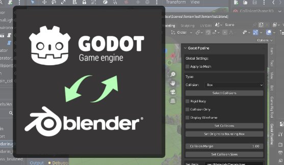
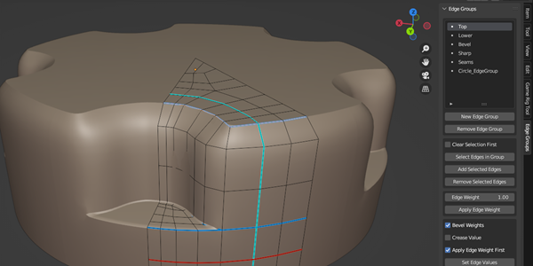
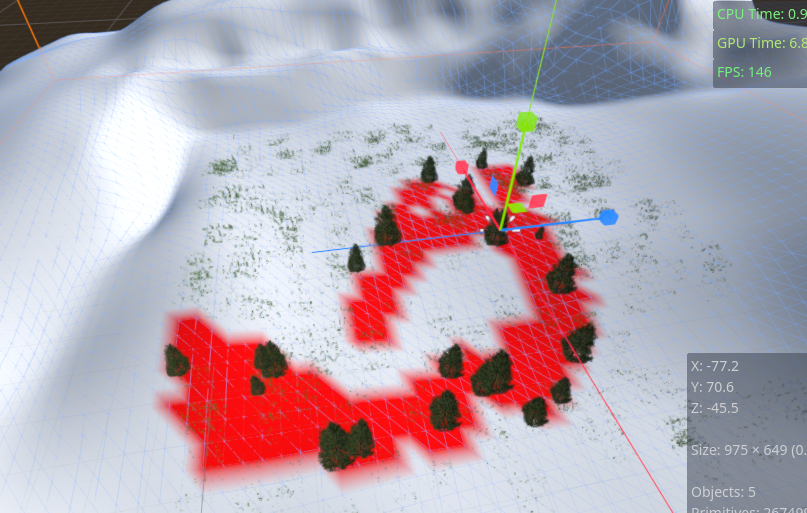

This add-on streamlines many aspects of bringing in assets from Blender to Godot.
A free companion addon on the Godot side of things can be found on the Godot Asset Library.
This addon enables Blender artists to use an edge group workflow, very similar to the built in vertex group feature.
A simple tool to paint vertex colors on MeshInstance3Ds.
